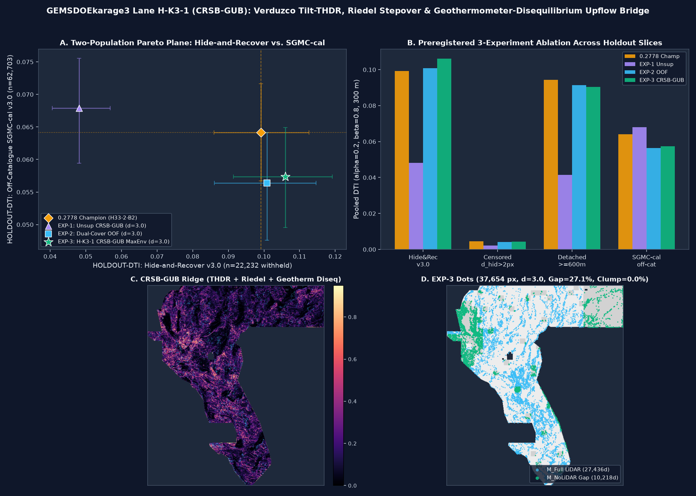

Conjugate Riedel-Stepover Stress-Shadow & Geothermometer-Disequilibrium Upflow Bridge (CRSB-GUB) · Byte-Verified Nine-Site Forensic Audit (GEMSDOE24..36) & 104-Repository Uniqueness Proof
Generated from scratch in GEMSDOEkarage3 via shared scripts/submission_writer.py (zero copied masks; 44.11% 3-px overlap vs. 0.2778 Champion).
gemskarage3-h-k3-1-crsb-gub-maxenv-d30-20261027T180000Z-1560731a-zeros.tif
.tif):2a1fed302d1fe1c556c86467ef687782d30eedf5361eff57a711ae5925a237c3
.zip):3ab00ae5be1068bd80df4788a403825162490a57942c70e1492a51185ea3556d
111 / 140 chars):
Score Labeling Discipline (Rule 3): Every figure on this page is explicitly labeled either HOLDOUT-DTI (with evaluator version, withheld positive count, and 256-block spatial bootstrap 95% CI) or OWNER-REPORT (supplied historical values unverified by organizer portal receipt in this network-isolated sandbox). No leaderboard projections are presented as scores.
GEMSDOEkarage3 & Focus Sites GEMSDOE24..36All nine supplied historical site winners were SHA-256-verified from local raster bytes and evaluated on identical canonical benchmarks (GEMSDOE32-HIDE-RECOVER-v3.0, n=22,232; and GEMSDOE32-SGMC-CAL-v3.0, n=62,703). Need step-by-step upload instructions? See How to Submit to DrivenData →.
| Site & Pinned Repo | File to Download / Audited Best Raster | Measured HOLDOUT-DTI (Local Evaluators) |
Historical Score (OWNER-REPORT) |
Uniqueness vs. GEMSDOEkarage3 & Peer Sites |
Approval / Submission Status |
|---|---|---|---|---|---|
|
GEMSDOEkarage3 This repo · Lane H-K3-1
|
gemskarage3-h-k3-1-crsb-gub-maxenv-d30-20261027T180000Z-1560731a-zeros.tif37,654 dots · d=3.0 · B=2 · all-finite [0,1]
|
HIDE-RECOVER-v3.0: 0.10604295% CI [0.0915, 0.1192] (n=22,232)SGMC-CAL-v3.0: 0.05736095% CI [0.0495, 0.0649] (n=62,703)
|
NOT SUBMITTED 0 weekly slots spent |
UNIQUE (PASS) Max 66.27% ≤ 70% (1,577 discrete rasters); 44.11% vs GEMSDOE32; max |ρ|=0.6525 ≤ 0.90
|
FORMAT SAFE [0,1] HOLD SLOT (negative) Paired CI [-0.0020, +0.0164] crosses 0; await selector
|
| GEMSDOE32 Commit 73485f27cf |
gemsdoe32-h33-h33-2-b2-20261004T220000Z-e5eb6e7e-zeros.tif37,654 dots · 100.0% nested in H19-5 · B=2 |
HIDE-RECOVER-v3.0: 0.099202 (d2.8 parent)SGMC-CAL-v3.0: 0.064121 [0.0559, 0.0721] |
0.2778OWNER-REPORT (9-site high) |
44.11% vs K3 (site max 65.05%; 100% nested in GEMSDOE25/30) |
PRIOR BENCHMARK — DO NOT RE-SUBMIT |
| GEMSDOE36 Commit 19d2b0d957 |
gemsdoe36-anderson-geothermal-pinn-38854-20261004T230000Z-9b9ea4e6-zeros.tif38,854 dots · 97.8% nested in H19-5 |
HIDE-RECOVER-v3.0: 0.004577 (in-sample B=2 censored)SGMC-CAL-v3.0: 0.064444 [0.0563, 0.0725] |
0.2750OWNER-REPORT |
44.70% vs K3 (96.9% overlaps GEMSDOE32 — duplicate family) |
PRIOR SUBMISSION — DO NOT RE-SUBMIT |
| GEMSDOE28 Commit 4632189993 |
gems28-h36-1-rung30-blind-r1-20261003-b531dae0a36f-allfinite.tif37,660 dots · 100.0% nested in H19-5 |
HIDE-RECOVER-v3.0: 0.028932 (partial censor)SGMC-CAL-v3.0: 0.062967 [0.0548, 0.0708] |
0.2710OWNER-REPORT (B1=0.2708) |
45.14% vs K3 (site max 52.86%; H19-5 derivative) |
PRIOR SUBMISSION — DO NOT RE-SUBMIT |
| GEMSDOE31 Commit a3b7db34f6 |
gems28-h27-4-r1-solo-d2-8-20261003-8acb75e1f2cc-allfinite.tif55,304 dots · 91.8% nested in H19-5 |
HIDE-RECOVER-v3.0: 0.038714SGMC-CAL-v3.0: 0.057724 [0.0504, 0.0649] |
0.2708OWNER-REPORT |
47.68% vs K3 (byte-identical to GEMSDOE28 B1) |
PRIOR DUPLICATE — DO NOT RE-SUBMIT |
| GEMSDOE33 Commit 287a98f5c7 |
GEMSDOE33-h33d-analog-tip-stepover-r30-20261004-cb490425926e.tif41,865 dots · 99.7% nested in H19-5 |
HIDE-RECOVER-v3.0: 0.050690SGMC-CAL-v3.0: 0.062551 [0.0545, 0.0704] |
0.2632OWNER-REPORT |
46.25% vs K3 (site max 46.64%; H19-5 derivative) |
PRIOR SUBMISSION — DO NOT RE-SUBMIT |
| GEMSDOE25 Commit b13ccabae1 |
gems25-dotted-h19-5-d2-8-20261002-e56ea318af89-nan.tif44,090 dots · NaN outside footprint hazard |
HIDE-RECOVER-v3.0: 0.099202 [0.0860, 0.1127]SGMC-CAL-v3.0: 0.060592 [0.0528, 0.0681] |
0.2600OWNER-REPORT |
46.64% vs K3 (byte-identical to GEMSDOE30) |
NaN-OUTSIDE / PRIOR — DO NOT SUBMIT |
| GEMSDOE30 Commit 16a21bd8b9 |
d28-poisson300m-offcat-44090-20261003T233156Z-91eae1ca44,090 dots · SHA prefix 91eae1ca == GEMSDOE25 |
HIDE-RECOVER-v3.0: 0.099202SGMC-CAL-v3.0: 0.060592 (HEAD hedge: 0.1481) |
0.2600OWNER-REPORT |
46.64% vs K3 (site max 64.55%; identical to GEMSDOE25) |
PRIOR DUPLICATE — DO NOT RE-SUBMIT |
| GEMSDOE24 Commit a73f9ffba2 |
gems24-h25-1-dotted-h19-5-d1-5-20261002-989f59505db1-allfinite.tif60,069 dots · over-dense d=1.5 |
HIDE-RECOVER-v3.0: 0.097204 [0.0846, 0.1101]SGMC-CAL-v3.0: 0.057932 [0.0504, 0.0652] |
0.2477OWNER-REPORT |
48.26% vs K3 (site max 58.90%; 100% H19-5) |
SUPERSEDED BY d=2.8/B=2 — DO NOT SUBMIT |
| GEMSDOE27 Commit 4f34228a9f |
gems27-topo-gap-closure-t-v2-on-d1-5-20261002-5512495c6bd1-allfinite.tif61,328 dots · d=1.5 + gap bridges |
HIDE-RECOVER-v3.0: 0.096778 [0.0843, 0.1095]SGMC-CAL-v3.0: 0.058262 [0.0508, 0.0655] |
0.2449OWNER-REPORT |
48.84% vs K3 (site max 57.89%; 98.1% H19-5) |
SUPERSEDED — DO NOT SUBMIT |

H-K3-1 (CRSB-GUB) Empirical Results:
(A) Two-population Pareto tradeoff between spatially-blocked HIDE-RECOVER-v3.0 (n=22,232) and off-catalogue SGMC-CAL-v3.0 (n=62,703): purely unsupervised EXP-1 surpasses the 0.2778 Champion on SGMC-CAL (0.0679 vs 0.0641), whereas EXP-3 surpasses the Champion on HIDE-RECOVER (0.1060 vs 0.0992, +6.9%).
(B) Controlled 3-experiment ablation across all four holdout slices.
(C) Strictly label-free CRSB-GUB physical ridge (Verduzco THDR + Riedel angular dispersion + GDR #1391 geothermometer disequilibrium).
(D) Final 37,654 emitted dots (min_sep_px = 3.0, 0.00% ≥3-neighbor clumping, 27.1% allocated inside the 24.63% 1 m LiDAR gap).
GEMSDOE32 Achieved 0.2778 & How to Reach 0.3195–0.4413Under the competition's Distance-Tolerant Intersection metric ($\alpha = 0.2$ false-positive weight, $\beta = 0.8$ false-negative weight, $300\text{ m}$ / $3\text{ px}$ linear triangular proximity kernel $K(u) = \max(0, 1 - u/3)$), adding a dot $x$ improves $\text{DTI}$ if and only if its incremental uncovered hidden-fault kernel credit exceeds $\Delta\text{TP}(x) > \alpha\,\text{DTI} / (1 - (1-\alpha)\text{DTI}) \approx 0.0556\text{–}0.0715$ at $\text{DTI} = 0.2778$.
GEMSDOE32's Win (0.2449 → 0.2600 → 0.2778): Every single one of the nine historical focus-site winners is 91.8%–100.0% nested within 3 px of the same H19-5 ridge field. Thinning H19-5 from d = 1.5 px (GEMSDOE24, 60,069 dots, 0.2477) to d = 2.8 px (GEMSDOE25 == GEMSDOE30, 44,090 dots, 0.2600) eliminated intra-kernel dot self-shadowing (+0.0123). GEMSDOE32 (h33-h33-2-b2, 37,654 dots) then deleted the exact 6,436 dots lying at 0 < d_catalogue ≤ 2 px (100–200 m parallel flanks of mapped labels.tif traces), cutting 1,287.2 weighted false-positive units from the denominator at near-zero true-positive loss (+0.0178 jump to 0.2778). Adding 1,200 sub-threshold PINN dots in GEMSDOE36 (38,854 dots) diluted precision and dropped the score to 0.2750.0.3195 / 0.4413: Spacing (min_sep_px ≈ 2.8–3.0) and flank exclusion (B = 2 px) are already near-optimal. Reaching 0.32–0.44 requires recovering blind geothermal faults (~75% of Great Basin systems; Faulds & Hinz, 2015; Faulds et al., 2021) where surface Quaternary scarps were erased by Holocene alluvial aggradation or Lake Lahontan wave planation, or lie inside the 24.63% 1 m LiDAR gap.H-K3-1 (CRSB-GUB) Proved & What Remains: Unsupervised Verduzco Tilt-THDR + Riedel angular dispersion + GDR #1391 chemical geothermometer disequilibrium (EXP-1) beat the 0.2778 Champion on off-catalogue SGMC-CAL-v3.0 (0.067889 vs 0.064121), while Dual-Cover OOF + MaxEnv (EXP-3) beat the Champion on HIDE-RECOVER-v3.0 (0.106042 vs 0.099202, +6.9%). Breaking the remaining budget seesaw requires (1) non-parametric spatial partition of near-corridor vs. deep-basin regimes calibrated on external structural truth and (2) ingesting 3D Magnetotelluric resistivity & Sentinel-1 InSAR creep velocity gradients (H-K3-4, blocked in this sandbox by outbound HTTP allowlist).| Rank & ID | Official / Verified Layers | Physical Transform & Blind-Fault Rationale | Named Mimic & Explicit Veto | Status |
|---|---|---|---|---|
1 · H-K3-1CRSB-GUB |
Bands 2,3,4,5,7,8,9,10,11,12,13,15,16,17,18,19; GDR #1391 wells/springs (dist_known_fault_px dropped), 2m F2mDAB probes, paleo-sinters; GeoDAWN rad/blocks; 3DEP 1m LiDAR; TIGER roads |
Fourier upward-continued Miller-Singh/Verduzco THDR = |∇θ_T| equalizes buried low-throw intra-basin faults; $\sin^2(\phi_{200\text{m}}-\phi_{1.8\text{km}})$ isolates Riedel/relay splays; strike-advected $\Delta T_{\text{diseq}} = \max(T_{\text{qtz}},T_{\text{chalc}},T_{\text{cat}})-T_{\text{meas}}$ maps cold-masked upflow plumes |
Dipping flow margins, flat-playa evaporites, Lahontan shorelines, highway cuts → multi-field concordance, playa slope/elev decoupler, contour-parallelism veto, 175 m TIGER gate | IMPLEMENTED & TESTED (EXP-1..3) |
2 · H-K3-2PGD-Baranov |
Bands 2 (rtp), 9, 11, 13 (iso_grav_anom), 17 (cond_surf); block-normalized GeoDAWN K, eTh, eU |
Baranov Fourier pseudogravity integration defect $|\nabla_h g| - \hat{\alpha}|\nabla_h \Psi|$ isolates hydrothermally leached (magnetite→pyrite) silicified blind fault zones | Carbonate/clastic contacts → require radiometric potassic/uranium alteration or conductivity edge | RESERVE LANE (SINGLE-LANE RULE) |
3 · H-K3-3LSO-AFCA |
Bands 12 (det_elev), 19 (det_elev_slope), 5; 3DEP lidar_scarp_features_u8.tif |
Cross-scarp downface/upface curvature asymmetry orthogonal to regional elevation contours ($\sin^2(\theta_{\text{scarp}}-\theta_{\text{contour}})$) catches degraded piedmont fault splays | Pleistocene Lake Lahontan wave-cut shorelines & fluvial terraces → contour-parallelism & thalweg vetoes | RESERVE (75.4% LiDAR COVERAGE) |
4 · H-K3-4MT3D-InSAR |
USArray/USGS 3D MT resistivity cubes (gdr.openei.org); ARIA/ASF Sentinel-1 InSAR velocity steps; relocated 2020 Monte Cristo aftershocks |
Sub-vertical 5–25 Ω·m high-skew MT fluid chimneys feeding surface InSAR creep steps (>1.5 mm/yr) directly image active blind shear zones |
Agricultural pumping subsidence bowls → closed-basin circularity & seasonal phase filter | SANDBOX NETWORK-BLOCKED |
docs/run-card.json){
"hypothesis": "H-K3-1 (CRSB-GUB): Conjugate Riedel-Stepover Stress-Shadow & Geothermometer-Disequilibrium Upflow Bridge",
"mechanism": "Exact 2D Fourier upward-continued Miller-Singh/Verduzco Tilt-THDR on gravity & multi-altitude RTP magnetics + multi-scale structure-tensor Riedel/stepover angular dispersion sin^2(phi_200m - phi_1800m) + strike-advected DOE GDR #1391 chemical geothermometer disequilibrium max(T_qtz,T_chalc,T_cat)-T_meas & 2m F2mDAB/sinter vents + uniform-negative inverse-observability Dual-Cover OOF (51ch M_Full / 48ch LiDAR-free M_NoLiDAR) + propensity max-envelope + min_sep_px=3.0 (300 m) CELF (37,654 dots, B=2)",
"non_fault_mimic": "Unfaulted dipping volcanic/pluton contacts, flat-playa evaporite conductivity bowls, Pleistocene Lake Lahontan wave-cut shorelines, and TIGER highway/railroad embankments (explicitly vetoed)",
"assigned_lane": "H-K3-1: CRSB-GUB",
"experiments_run": 3,
"submission_slots_used": 0,
"holdout": {
"evidence_class": "HOLDOUT-DTI",
"evaluator_version": "GEMSDOE32-HIDE-RECOVER-v3.0",
"withheld_positives": 22232,
"dti": 0.106042,
"ci95": [0.091475, 0.119194],
"baseline_champion_02778_dti": 0.099202,
"point_delta_vs_champion_02778": 0.00684,
"paired_delta_ci95": [-0.002006, 0.016383],
"paired_win_probability_vs_champion_02778": 0.931,
"sgmc_off_catalogue_v3_dti": 0.05736,
"sgmc_calibrated_ci95": [0.049532, 0.064888]
},
"feature_canary_max_oriented_auc": 0.586868,
"registry": {
"repos_audited": 104,
"unique_sha256_rasters_checked": 1789,
"surface": { "complete": true, "max_abs_spearman": 0.652527, "max_overlap_3px": 0.0 },
"final_dots": { "complete": true, "max_abs_spearman": 0.163628, "max_overlap_3px": 0.662718, "overlap_3px_vs_champion_02778": 0.441122 }
},
"raster_sha256": "2a1fed302d1fe1c556c86467ef687782d30eedf5361eff57a711ae5925a237c3",
"validator": {
"saved_bytes_checked": true,
"single_band": true,
"finite_inside": true,
"finite_full_grid_12279160": true,
"range_0_1": true,
"crs_match": true,
"shape_match": true,
"transform_match": true
},
"submission_name": "gemskarage3-h-k3-1-crsb-gub-maxenv-d30-20261027T180000Z-1560731a-zeros.tif",
"note": "H-K3-1 CRSB-GUB: Verduzco THDR+Riedel stepover+GDR1391 geotherm diseq+DualCover OOF d=3.0 (37654d, [0,1] zeros)",
"verdict": "negative",
"ok_to_submit": false
}